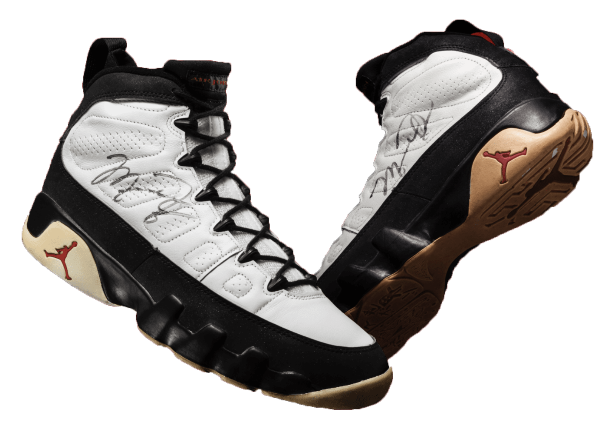
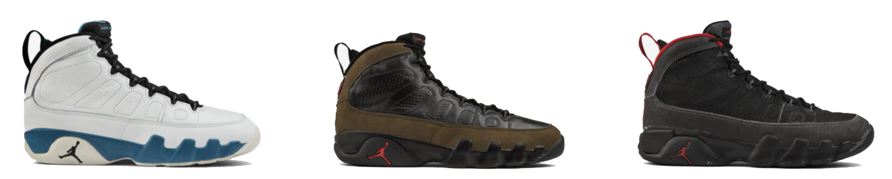
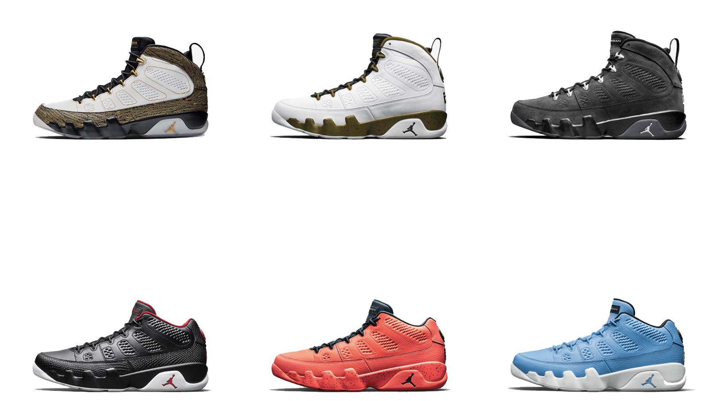
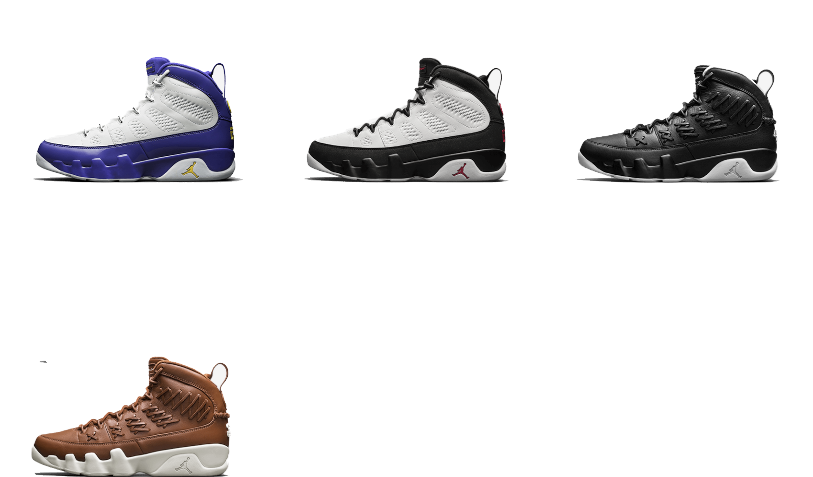

After three consecutive years as the league's champion, MJ left the hardwood — his first of three total retirements. But his hiatus from one game didn’t hinder his athletic vision. Jordan took to the baseball diamond instead, playing a single season in the minor leagues.
Neither did this professional pivot stop the release of the Air Jordan IX. His status as an international icon inspired a multilingual homage to his attributes on the sole, including words like independence, freedom, athletic, and force.



